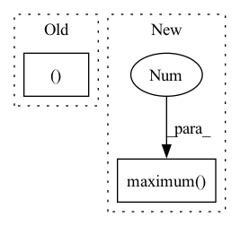

Pattern ID :24376
Before Change
def get_box(mix_weight, height, width):
cut_rate_half = tf.math.sqrt(1.0 - mix_weight) / 2
cut_h_half, cut_w_half = tf.cast(cut_rate_half * float(height), tf.int32), tf.cast(cut_rate_half * float(width), tf.int32)
center_y = tf.random.uniform((1After Change
def get_box(mix_weight, height, width):
cut_rate_half = tf.math.sqrt(1.0 - mix_weight) / 2
cut_h_half, cut_w_half = tf.cast(cut_rate_half * float(height), tf.int32), tf.cast(cut_rate_half * float(width), tf.int32)
cut_h_half, cut_w_half = tf.maximum(1, cut_h_half), tf.maximum(1 , cut_w_half)
// Can be non-square on border
center_y = tf.random.uniform((), minval=0, maxval=height, dtype=tf.int32)
center_x = tf.random.uniform((), minval=0, maxval=width, dtype=tf.int32)
yl = tf.clip_by_value(center_y - cut_h_half, 0, height)In pattern: SUPERPATTERN
Frequency: 5
Non-data size: 2
Instances Fragment ID: 75714882
Project Name: leondgarse/keras_cv_attention_models
Commit Name: a05afc217c7710193105435e4240723aba7eef2b
Time: 2021-12-05
Author: leondgarse@gmail.com
File Name: keras_cv_attention_models/imagenet/data.py
M Class Name: AnonimousClass
N Class Name: AnonimousClass
M Method Name: get_box(3)
N Method Name: get_box(3)
M Parent Class:
N Parent Class:
M File Name: keras_cv_attention_models/imagenet/data.py
N File Name: keras_cv_attention_models/imagenet/data.py
M Start Line: 258
M End Line: 260
N Start Line: 301
N End Line: 309
Before Change
cfg):
mask_size = cfg.mask_size
num_pos = pos_proposals.size(0)
mask_targets = pos_proposals.new_zeros((num_pos, mask_size, mask_size ))
if num_pos > 0:
pos_proposals = pos_proposals.cpu().numpy()
pos_assigned_gt_inds = pos_assigned_gt_inds.cpu().numpy()After Change
bbox = proposals_np[i, :].astype(np.int32)
x1, y1, x2, y2 = bbox
w = np.maximum(x2 - x1 + 1, 1)
h = np.maximum( y2 - y1 + 1, 1 )
// mask is uint8 both before and after resizing
target = mmcv.imresize(gt_mask[y1:y1 + h, x1:x1 + w],
(mask_size, mask_size))
mask_targets.append(target) Fragment ID: 75714881
Project Name: wxinlong/solo
Commit Name: 111c27b077d9d8967e27299798bfbcfad384c463
Time: 2018-10-04
Author: chenkaidev@gmail.com
File Name: mmdet/core/mask_ops/mask_target.py
M Class Name: AnonimousClass
N Class Name: AnonimousClass
M Method Name: mask_target_single(4)
N Method Name: mask_target_single(5)
M Parent Class:
N Parent Class:
M File Name: mmdet/core/mask_ops/mask_target.py
N File Name: mmdet/core/mask_ops/mask_target.py
M Start Line: 23
M End Line: 39
N Start Line: 16
N End Line: 35
Before Change
return np.array([], dtype=np.intp)
r = _bbox.bbox(img)
if border:
min1,max1,min2,max2 = r
min1 = max(0, min1-border)
min2 = max(0, min2-border)
max1 += borderAfter Change
r = _bbox.bbox(img)
if border:
r = r.reshape((-1, 2))
np.maximum( r.T[0] - border, 0 , out=r.T[0])
r.T[1] += border
r = r.ravel()
if as_slice:
r = tuple([slice(s,e) for s,e in r.reshape((-1,2))]) Fragment ID: 75714896
Project Name: luispedro/mahotas
Commit Name: 8212d47a90e0f90ba0d264d062880ee866b4808f
Time: 2015-06-26
Author: luis@luispedro.org
File Name: mahotas/bbox.py
M Class Name: AnonimousClass
N Class Name: AnonimousClass
M Method Name: bbox(3)
N Method Name: bbox(3)
M Parent Class:
N Parent Class:
M File Name: mahotas/bbox.py
N File Name: mahotas/bbox.py
M Start Line: 33
M End Line: 40
N Start Line: 33
N End Line: 38
Before Change
w = Tensor.ones(32,12,3,3)
out = x.conv2d(w, stride=(2,2), padding=(1,1))
r1, r2 = out.relu(), out.elu()
r1.numpy(), r2.numpy()
// TODO: make this a real test
Tensor.no_grad = False
def test_first_three(self):After Change
w = Tensor.randn(32,12,3,3)
out = x.conv2d(w, stride=(2,2), padding=(1,1))
r1, r2 = out.relu(), out.elu()
np.testing.assert_allclose(r1.numpy(), np.maximum( out.numpy(), 0 ) )
np.testing.assert_allclose(r2.numpy(), np.where(out.numpy() > 0, out.numpy(), (np.exp(out.numpy()) - 1)), atol=1e-5)
Tensor.no_grad = False
Fragment ID: 75714895
Project Name: geohot/tinygrad
Commit Name: 8b7a16cf85035ed22f0fef0d9db4e8398b3cebfc
Time: 2023-03-10
Author: connor.henderson@talkiatry.com
File Name: test/test_conv.py
M Class Name: TestConv
N Class Name: TestConv
M Method Name: test_two_overlapping_binops_no_rerun(1)
N Method Name: test_two_overlapping_binops_no_rerun(1)
M Parent Class: unittest.TestCase
N Parent Class: unittest.TestCase
M File Name: test/test_conv.py
N File Name: test/test_conv.py
M Start Line: 55
M End Line: 55
N Start Line: 53
N End Line: 56
Before Change
w = Tensor.ones(32,12,3,3)
out = x.conv2d(w, stride=(2,2), padding=(1,1))
r1, r2 = out.relu(), (out-1)
r1.numpy(), r2.numpy()
Tensor.no_grad = False
// TODO: make this a real test
def test_two_overlapping_binops_no_rerun(self):After Change
w = Tensor.randn(32,12,3,3)
out = x.conv2d(w, stride=(2,2), padding=(1,1))
r1, r2 = out.relu(), (out-1)
np.testing.assert_allclose(r1.numpy(), np.maximum( out.numpy(), 0 ) )
np.testing.assert_allclose(r2.numpy(), out.numpy() - 1)
Tensor.no_grad = False
Fragment ID: 75714894
Project Name: geohot/tinygrad
Commit Name: 8b7a16cf85035ed22f0fef0d9db4e8398b3cebfc
Time: 2023-03-10
Author: connor.henderson@talkiatry.com
File Name: test/test_conv.py
M Class Name: TestConv
N Class Name: TestConv
M Method Name: test_two_binops_no_rerun(1)
N Method Name: test_two_binops_no_rerun(1)
M Parent Class: unittest.TestCase
N Parent Class: unittest.TestCase
M File Name: test/test_conv.py
N File Name: test/test_conv.py
M Start Line: 45
M End Line: 45
N Start Line: 43
N End Line: 46